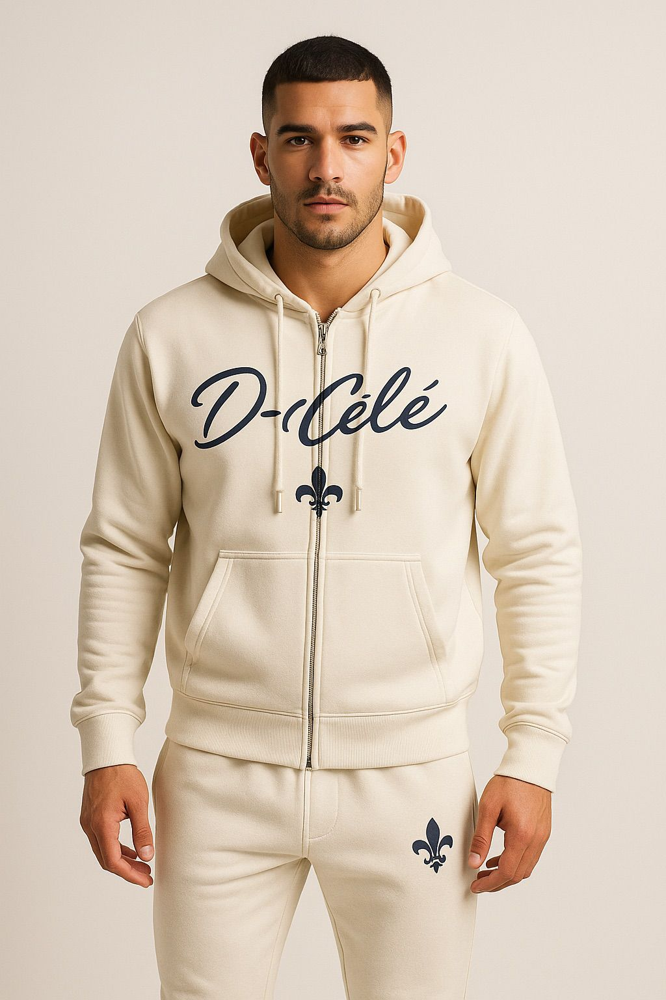

Marka Hikayesi
D-Cêlê vitrinde, Daban-Cêlê kökte.
D-Cêlê kısa, sert ve akılda kalan isim tarafıdır. Daban-Cêlê ise markanın asıl karakterini, kökenini ve ağırlığını taşır. Ana sayfa bu havayı verir, kategori sayfaları ise ürünleri tek tek açar.
Daban-Cêlê
Köklerden doğan prestij